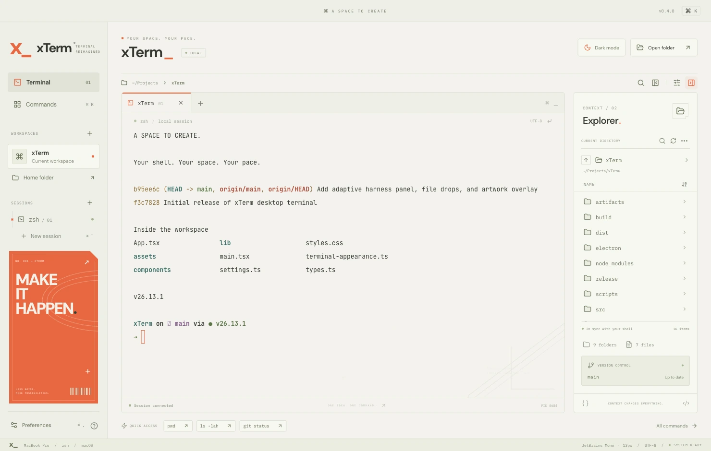
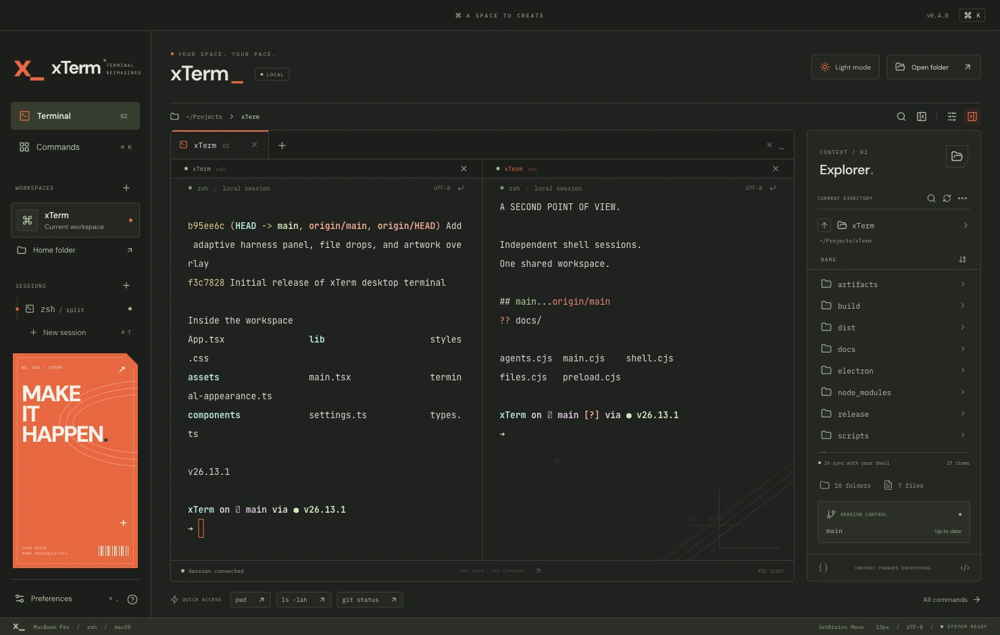
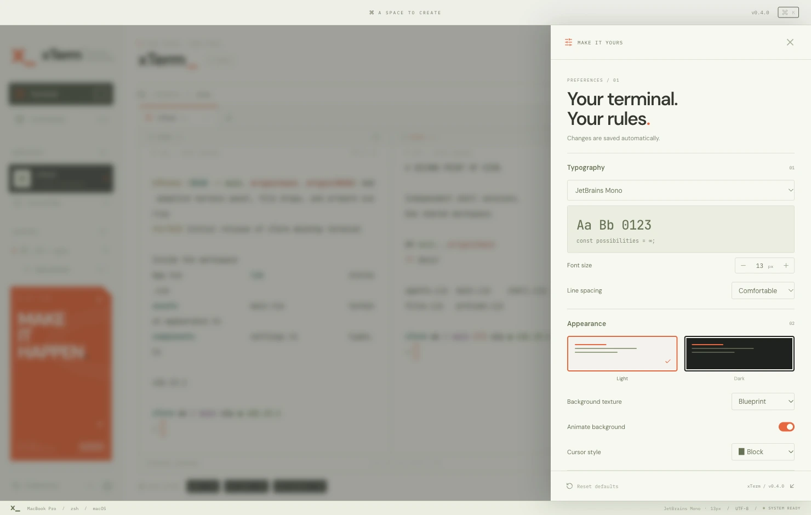

Your shell, at home.
Real zsh and bash sessions. Your aliases, history, completion, and familiar command-line tools come with you.
A terminal with a different point of view.
A little less noise. A lot more room to build. Your familiar shell, coding agents, and files, together in a thoughtfully crafted desktop workspace.
Download for Mac
EXPANDThe tools you reach for, with the space to make them your own.
Real zsh and bash sessions. Your aliases, history, completion, and familiar command-line tools come with you.
Independent tabs and split panes keep your server, your shell, and your next idea within reach.
The HARNESS panel follows the active pane, showing detected coding agents, reported models, and activity.
A built-in explorer follows your directory. Drag a file into the terminal to insert its safely quoted path.
Paper or carbon. JetBrains Mono or IBM Plex Mono. Animated backgrounds or a clean canvas. Set your own pace.
Free to use, MIT licensed, and open source. Explore the code, make it yours, or help shape what comes next.
No mockups here.
Just xTerm, doing its thing.

EXPANDKeep the bigger picture in view.

EXPANDYour workspace. Your preferences.
Download xTerm for your Mac and make yourself at home.
Download for MacFor Macs with an Apple chip. This release is unsigned and not notarized by Apple. See Apple’s guide to opening an app from an unidentified developer.